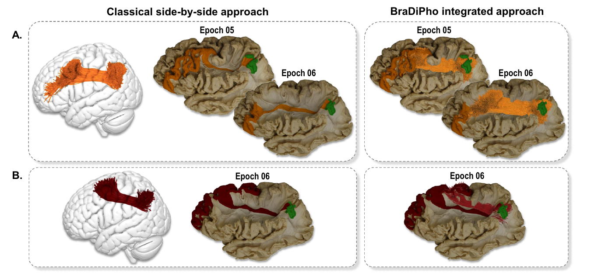
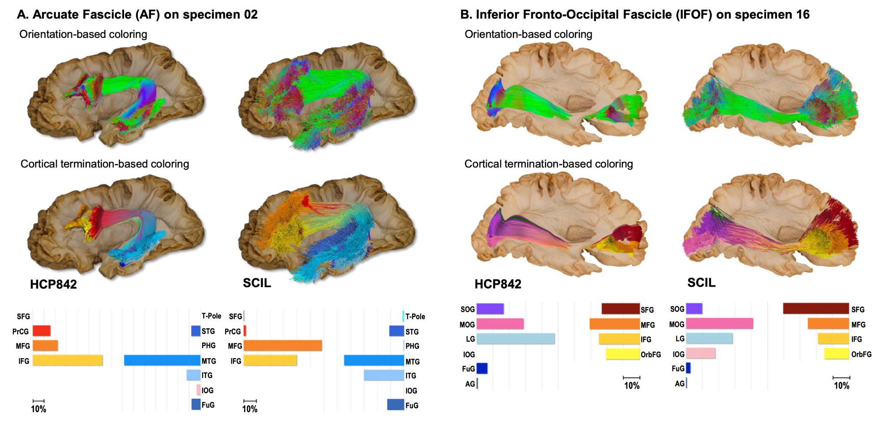

Fig. 1 | Overview of the resources provided for each of the eight ex vivo 3D models in BraDiPho.A Workflow of the photogrammetric reconstruction of cortex-sparing Klingler microdissection. Each dissection epoch is documented with 480 photographs acquired at 42-megapixel resolution over 360°. Textured meshes are reconstructed for each epoch and aligned with the surface model of the T1-MRI of the specimen. For each BraDiPho model, users have access to all dissection epochs (B, left), cortical gyral annotations (B, middle), sample tractography bundles from an in vivo subject (B, right), and twelve reference atlases, including cortical parcellations and tractography atlases (C), registered to the radiological space of each specimen.Vavassori et al., Nature Communications (2025).
From dissection to reusable digital data
Anatomy that can be explored, aligned and reused.
BraDiPho transforms layer-by-layer human white-matter dissection into high-resolution, fully textured 3D models that can be directly integrated with neuroimaging data.
Traditional white-matter dissection provides direct anatomical evidence but is destructive and usually documented through static two-dimensional photographs. Diffusion MRI tractography provides interactive three-dimensional reconstructions, but remains an indirect estimate of anatomy.
BraDiPho bridges this gap: successive stages of Klingler microdissection are reconstructed by photogrammetry and registered to the MRI space of the specimen, where they can be combined with tractography, cortical annotations and neuroanatomical atlases.
8human hemispheres
823D dissection stages
39,840high-resolution photographs
12reference atlases
Beyond side-by-side comparison
Putting both modalities in the same anatomical space changes what can be concluded from them.

Fig. 2 | Direct integration of tractography and dissection with BraDiPho. Direct integration can reveal both convergence and discrepancies that remain hidden in conventional side-by-side comparisons. Vavassori et al., Nature Communications (2025).
By directly superimposing tractography and dissection, BraDiPho makes it possible to identify anatomical agreement, reconstruction biases and modality-specific limitations within a shared spatial framework.
Anatomy informing tractography
Dissection-derived anatomy can be mapped back onto tractography.
BraDiPho supports a bidirectional exchange between modalities: tractography can be evaluated with dissection, while anatomical information from individual specimens can also enrich tractography reconstructions.

Fig. 4 | Integration of dissection-derived cortical annotations with tractography. Manual gyral annotations from BraDiPho specimens were used to guide the parcellation of homologous fiber bundles from the HCP842 and SCIL tractography atlases. Vavassori et al., Nature Communications (2025).
Manual gyral annotations from BraDiPho specimens can be mapped onto homologous arcuate fasciculus and inferior fronto-occipital fasciculus reconstructions from the HCP842 and SCIL atlases. The same tract can therefore be interpreted not only by streamline orientation, but according to its cortical terminations in the anatomical context of an individual specimen.
Direct scientific application
BraDiPho in action.
The companion Communications Biology study provides a direct demonstration of BraDiPho's scientific potential. Rather than using 3D dissection merely as a visual reference, BraDiPho was used to anatomically evaluate and refine population tractography of the human superior longitudinal system.
Population tractography from 39 participants was directly confronted with layer-by-layer microdissections reconstructed in the BraDiPho framework. Of 45 tractography-derived subcomponents, 22 could be directly matched with ex vivo anatomical annotations. This integration revealed a systematic organization of white-matter fibers, with shorter connections tending to remain superficial while longer connections course progressively deeper.
Fig. 1 | Vue d’ensemble des ressources fournies pour chacun des huit modèles 3D ex vivo de BraDiPho.A Flux de reconstruction photogrammétrique des microdissections de Klingler préservant le cortex. Chaque étape de dissection est documentée par 480 photographies acquises à 42 mégapixels sur 360°. Les maillages texturés sont reconstruits pour chaque étape puis alignés avec le modèle de surface de l’IRM T1 du spécimen. Pour chaque modèle BraDiPho, les utilisateurs ont accès à toutes les étapes de dissection (B, gauche), aux annotations gyrales corticales (B, milieu), à des exemples de faisceaux de tractographie d’un sujet in vivo (B, droite), ainsi qu’à douze atlas de référence (C) enregistrés dans l’espace radiologique de chaque spécimen.Vavassori et al., Nature Communications (2025).
De la dissection aux données numériques réutilisables
Une anatomie que l’on peut explorer, aligner et réutiliser.
BraDiPho transforme la dissection couche par couche de la substance blanche humaine en modèles 3D haute résolution entièrement texturés, directement intégrables aux données de neuroimagerie.
La dissection traditionnelle fournit une preuve anatomique directe, mais elle est destructive et généralement documentée par des photographies bidimensionnelles statiques. À l’inverse, la tractographie issue de l’IRM de diffusion fournit des reconstructions tridimensionnelles interactives, mais reste une estimation indirecte de l’anatomie.
BraDiPho relie ces deux approches : les étapes successives de microdissection de Klingler sont reconstruites par photogrammétrie puis recalées dans l’espace IRM du spécimen, où elles peuvent être combinées avec la tractographie, les annotations corticales et les atlas neuroanatomiques.
8hémisphères humains
82étapes de dissection 3D
39 840photographies haute résolution
12atlas de référence
Au-delà de la comparaison côte à côte
Placer les deux modalités dans le même espace anatomique change ce que l’on peut en conclure.
Fig. 2 | Intégration directe de la tractographie et de la dissection avec BraDiPho. L’intégration directe peut révéler des convergences mais aussi des divergences invisibles dans une comparaison conventionnelle côte à côte. Vavassori et al., Nature Communications (2025).
En superposant directement tractographie et dissection, BraDiPho permet d’identifier les concordances anatomiques, les biais de reconstruction et les limites propres à chaque modalité dans un cadre spatial partagé.
L’anatomie informe la tractographie
L’anatomie issue de la dissection peut être réinjectée dans la tractographie.
BraDiPho permet un échange bidirectionnel entre modalités : la tractographie peut être évaluée par la dissection, tandis que les informations anatomiques issues de spécimens individuels peuvent enrichir l’interprétation des reconstructions tractographiques.
Fig. 4 | Intégration des annotations corticales dérivées de la dissection avec la tractographie. Les annotations gyrales manuelles des spécimens BraDiPho ont été utilisées pour guider la parcellisation de faisceaux homologues issus des atlas de tractographie HCP842 et SCIL. Vavassori et al., Nature Communications (2025).
Les annotations gyrales manuelles des spécimens BraDiPho peuvent être projetées sur les reconstructions homologues du faisceau arqué et du faisceau fronto-occipital inférieur provenant des atlas HCP842 et SCIL. Un même faisceau peut ainsi être interprété non seulement selon l’orientation de ses streamlines, mais également selon ses terminaisons corticales dans le contexte anatomique propre à un spécimen individuel.
Application scientifique directe
BraDiPho en action.
L’étude complémentaire publiée dans Communications Biology constitue une démonstration directe du potentiel scientifique de BraDiPho. La dissection 3D n’y est pas utilisée comme simple référence visuelle : elle sert à évaluer anatomiquement et à raffiner une tractographie de population du système longitudinal supérieur humain.
La tractographie de 39 participants a été confrontée directement à des microdissections couche par couche reconstruites dans le cadre BraDiPho. Parmi 45 sous-composantes dérivées de la tractographie, 22 ont pu être directement appariées à des annotations anatomiques ex vivo. Cette intégration a révélé une organisation systématique des fibres de substance blanche : les connexions courtes tendent à rester superficielles, tandis que les connexions longues cheminent progressivement plus en profondeur.
Tractographie de population → sélection des streamlines plausibles → évaluation anatomique avec BraDiPho → modèle raffiné. Vavassori et al., Communications Biology (2025), Fig. 1.